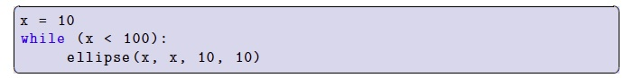

Infinite loops are loops that repeat forever, and they can sometimes be the worst enemy of the novice programmer. That’s because infinite loops can make it look like your program is doing nothing, when in fact, the real problem is that your program is effectively running uselessly in circles! A while-loop whose loop condition can never become False is an infinite loop. Here is an example:

This program intends to draw a diagonal line of circles across the canvas. But in the loop's body, we forgot to include any statement that changes x. Since x is initialized with a value of 10 that doesn’t change, the loop condition x < 100 will always be True. So, if you try running this program, it won’t draw anything on the screen because the program gets stuck in an infinite loop. The only thing we can do is click on Processing’s “stop” button, which will stop the program from running. If you ever find yourself mystified by the behaviour of a program that you write, where the program seems to simply refuse to do what you tell it to, be wary that an infinite loop may be the culprit.